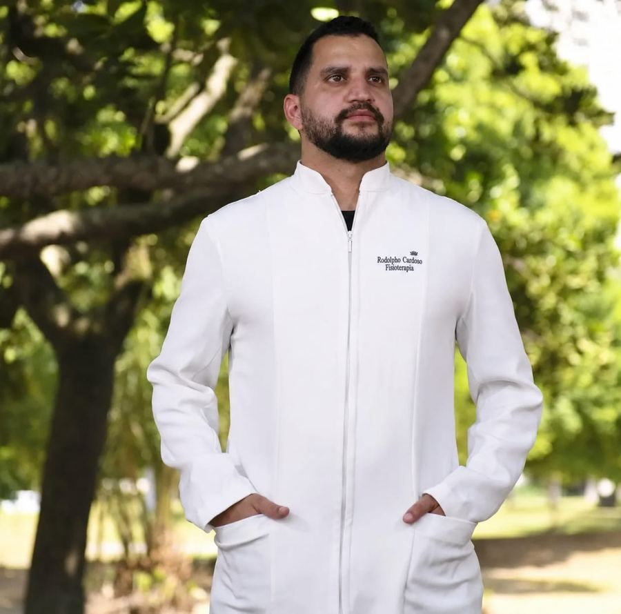

Fisioterapia domiciliar · Rio de Janeiro
Atendimento individualizado para recuperação esportiva, pós-operatório, dores crônicas e mobilidade reduzida, na Barra da Tijuca, Barra Olímpica, Jacarepaguá e Recreio dos Bandeirantes.

Qual é o seu caso?
Recuperação, prevenção de lesões e retorno ao treino: corrida, triathlon, natação, trail, ciclismo e futebol.
Pós-operatório, dores crônicas, terceira idade e mobilidade reduzida, com acompanhamento no conforto de casa.
Sem problema. Me conta pelo WhatsApp o que você está sentindo e eu te oriento sobre o melhor caminho.
Área de atendimento
Atuação em traumato-ortopedia e fisioterapia esportiva, com atendimento domiciliar personalizado para pacientes em diferentes fases da reabilitação, desde o pós-operatório até o retorno ao treino.
Leva toda a estrutura necessária até o paciente, com avaliação individual e plano de tratamento adaptado ao objetivo de cada um.
Atendimento domiciliar
Fototerapia utilizada no processo de reparo tecidual e redução de dor.
Aplicado em lesões e no pós-operatório para estimular a cicatrização.
Recuperação muscular e melhora da circulação após esforço físico.
Usada para analgesia e fortalecimento muscular.
Mobilização articular e técnicas manuais de tratamento.
Trabalho de tensão e encurtamentos musculares.
Receba contato